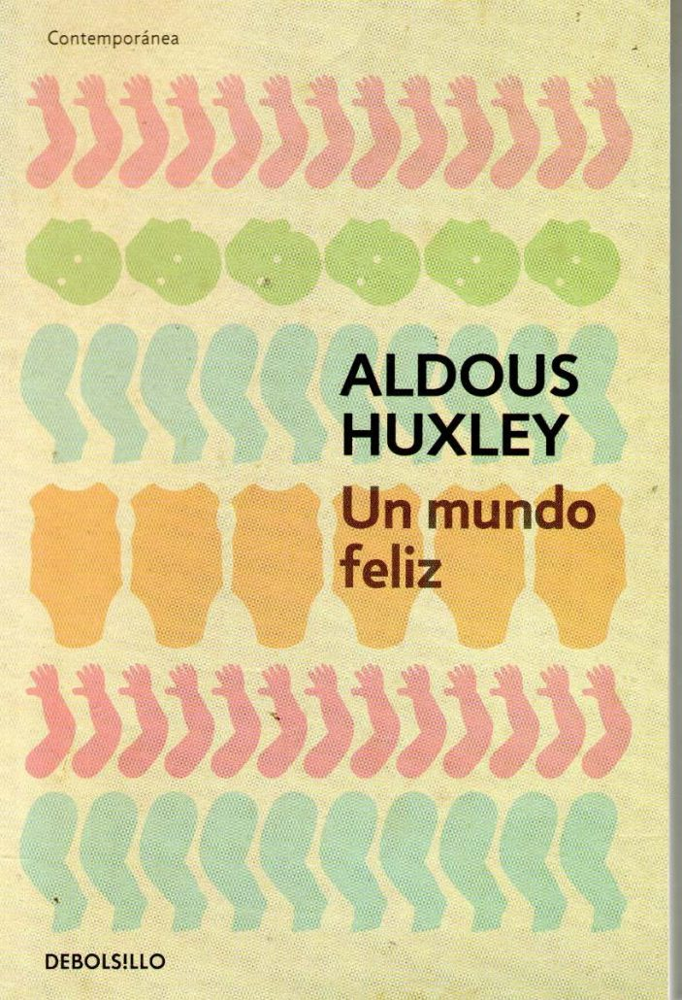
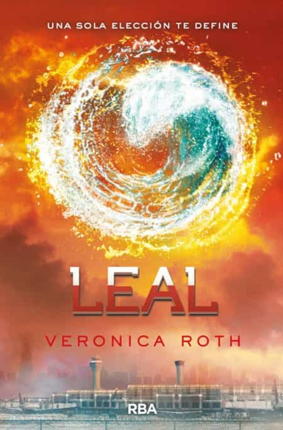

Nueva lectura: Un mundo feliz
Esta semana empezaremos con la lectura grupal del libro "Un Mundo
Feliz" del autor Aldous Huxley.

Descripción: Trata sobre un mundo tecnológico avanzado donde
se hace cultivo de humanos y se manejan sus emociones a través de una droga
llamado soma, mostrando un mundo sin familia, diversidad cultural, arte, amor, etc.
Puntuación según Google: 4,3/5
Género: Novela.
La imagen que ven es el libro que yo tengo, por si lo quieren, sino, pueden
conseguir un PDF. Por ahora debemos leer hasta la página 60, la semana que viene iré
agregando páginas para leer y debateremos esas hojas leídas.
Epílogo de Leal (trilogía Divergente)
Para concluir esta lectura, leeremos el epílogo. No es muy largo, así que podrán terminarlo en al menos
treinta minutos. En mi lbro son 15 páginas. Preparensen porque es un final muy lindo :)
La semana que viene haremos un Zoom para que podamos hablar de este libro, para luego más tarde hablarlo en la sección
de debates, para que podamos hablar de manera textual y virtual.
Últimos capítulos de Leal (trilogía Divergente)
Ya casi estamos llegando al final de esta lectura. Si que fue larga ¿No?
Esta vez leeremos 5 capítulos. Pero tranquilxs, no es tan largo... Leeremos los capítulos 52, 53, 54
que cada una posee una sola página; y la 55 y 56 que tiene 6 páginas cada una. En total sería 15 hojas.
En una semana volveremos al link de Zoom de siempre para hablar de esos capítulos, qué nos hicieron sentir,
qué no nos gustó, que si nos gustó de esos capítulos, etc.
Seguimos con Leal (trilogía Divergente)
Esta semana leeremos 9 capítulos: de la 43 a la 51.
La 43 posee 3 páginas, la 44 nueve, la 45 seis, la 46 tres, la 47 cinco, la 48 seis, la 49 dos, la 50 seis
y la más larga que es el capítulo 51 con 13 páginas. En total son 53 páginas.
Recuerden que la proxima semana en el horario de siempre tendremos el Zoom para hablar de la lectura que
hicimos hasta el momento ¡No es obligatoria pero lo mejor es participar ya que es una lectura conjunta!
Nuevos capítulos de Leal (trilogía Divergente)
¡Me alegra mucho que les esté gustando el libro! La videollamada pasada recibí muy buenas
opiniones sobre el libro.
Esta semana nuevamente leeremos 8 capítulos: de la 35 a la 42.
La 35 posee 7 páginas, la 36 seis, la 37 cinco, la 38 cuatro, la 39 doce, la 40 seis, la 41 ocho y la 42
once páginas. En total son 59 páginas. En estos capítulos se van a venir una muy grande pelea, va a ser
casi imposible desviar los ojos del libro.
Recuerden, la semana que viene debatiremos sobre los capítulos en Zoom.
Más capítulos de Leal (trilogía Divergente)
Vamos avanzando con la lectura, que veo que les está gustando :)
Les dejaré para leer 8 capítulos: del 27 al 34
El 27 tiene 4 páginas como el 28, el 29 siete, el 30 cuatro, el 31 siete, el 32 siete, el 33 doce ya
el más largo que es el 34 con 14 páginas. Les prometo que está entretenido, y sé que están ansiosxs por
leerlo, ya que los dejé en un capítulo muy emocionante.
El lunes nos vemos en la videollamada para hablar de estos capítulos.
Más de Leal (trilogía Divergente)
Hoy les traigo para leer un montón de páginas. Solo leeran 6 capítulos (de la
20 a la 26), pero hay muchisimas páginas. Pero les aseguro que luego de leer todo eso estarán
en la mitad del libro.
Empezamos leyendo el 20 con 5 páginas, el 21 con seis, el 22 dieciocho, el 23 veinte, el 24
es más tranquilo con cuatro páginas, el 25 con doce y el 26 con diez. En total serían 75 páginas. Es
menos que la semana pasada pero es una buena cantidad de hojas.
En el zoom de la próxima semana tendremos mucho de que hablar ;)
Nuevos capítulos de Leal (trilogía Divergente)
¿Les va gustando la lectura? Porque les traigo 6 capítulos para leer: de la 14 a la 19.
El 14 tiene 9 páginas, el 15 dieciseis, el 16 seis, el 17 quince, el 18 dieciocho y el 19 trece. En
total serían 77 ¡Un montón! Van a estar un buen rato leyendo.
Hablaremos sobre estos capítulos el martes de la semana que viene, recuerden conectarse.
Seguimos con Leal (trilogía Divergente)
Vamos a seguir con esta lectura junto con 8 capítulos: del 6 al 13
El 6 tiene 6 páginas, el 7 nueve, el 8 once, el 9 cuatro, el 10 dieciseis, el 11 seis, el 12
cuatro y el 13 cinco. En total serían 61 páginas. Parece poco, pero leyendo se te pasa el tiempo
volando.
Los días martes a las 6:00 pm horario argentino nos encontraremos en el siguiente link de Zoom: *
inserte un link de Zoom*.
Nueva lectura: Leal (trilogía Divergente)
Esta semana empezamos con la lectura grupal del tercer libro de la Saga Divergente
llamado "Leal" de la autora Veronica Roth.

Descripción: En este libro, Tris se da cuenta que el
mundo donde estuvo toda su vida estaba destruida. Y aunque intente dejar su pasado atrás junto con
Tobias, aún deberá luchar contra su ignorancia sobre el mundo que la vió crecer.
Puntuación según Google: 3,9/5
Género: Novela
Este es el libro que yo tengo para que se guien, o sino pueden conseguir un PDF. Pueden
ya empezar a leer hasta el capítulo 5, luego les diré cuándo nos encontraremos en videollamada para
empezar a hablar del libro.